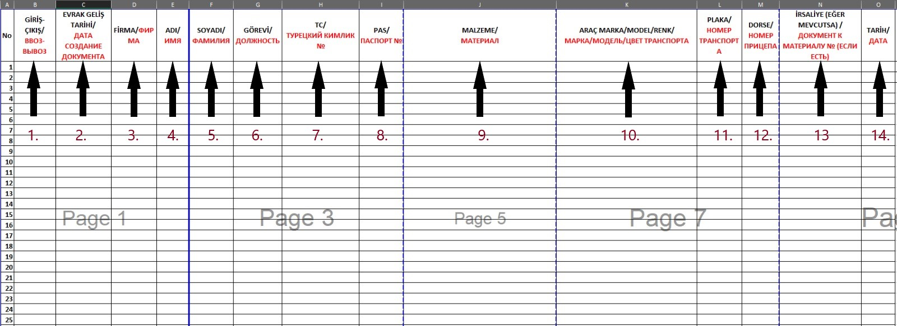

Akkuyu NGS İnşaat Alanından Ticari ve Maddi Kıymetlerin (TMK) Çıkışı İçin İzlenecek Süreçler
1. Yetkili Onayı Alınması
Değerli malzeme mektubunun hazırlanma sürecinde Ekonomi Güvenliği Birimi Müdürü Sayın Andrei Shevchenko ile görüşme yapılmalı,
onayı alındıktan sonra süreç Erişim Kontrol Departmanı tarafından yürütülmeye başlanacaktır.
İletişim: andrei.shevchenko@t2ic.com
2. Gerekli Evraklar
TMK çıkışı için hazırlanan belgeler, Gonenc Can Caynak, Tuğba Yay ve Teoman Fazlı'ya, mail konusu "TMK Malzeme Çıkış Talep Formu Hk." olarak iletilmelidir:
• Gonenc Can Caynak gonenc.caynak@t2ic.com
• Tuğba Yay tugba.yay@t2ic.com
• Teoman Fazlı teoman.fazli@t2ic.com
ÖNEMLİ: Akkuyu Güvenlik Birimi'nin onaylı mektubu olmadan, talep edilen maddi değerli malzemelerin çıkışına izin verilmemektedir.
ÖNEMLİ: Gerekli belgeleri hazırladıktan sonra, sözleşmeli olduğunuz TSM, JV, ICN gibi ilgili firma temsilcisine mektubu ileterek süreci başlatabilirsiniz.
ÖNEMLİ: Onaylanmış değerli malzeme mektubunun orijinali Güvenlik Ofisi'ne teslim edildikten sonra değerli malzeme çıkış süreci başlatılacaktır.
3. Belge Alanları
1. Giriş-Çıkış: Malzemeler Sahaya girecekse "Giriş", çıkacaksa "Çıkış" yazılmalıdır.
2. Evrak Geliş Tarihi: Evrak hazırlık tarihi yazılmalıdır.
3. Firma: T2-IC JV ya da kendi firma isminiz belirtilmelidir.
4. Ad : Malzemeyi getirecek veya çıkaracak personelin adı.
5. Soyad : Malzemeyi getirecek veya çıkaracak personelin soyadı.
6. Görevi : Malzemeyi taşıyan personelin görevi.
7. TC : Personel TC vatandaşı ise T.C. Kimlik Numarası yazılmalıdır.
8. Pas : Personel yabancı uyruklu ise Pasaport Numarası yazılmalıdır.
9. Malzeme: Malzemenin detaylı açıklaması yapılmalıdır.
10. Araç Marka/Model/Renk: Malzeme izni olan bir araç ile taşınacaksa, aracın marka, model ve rengi, “/” ile ayrılarak yazılmalıdır.
Araç izinsiz ise tek seferlik izin alınması için Tuğba Yay'a tugba.yay@t2ic.com e-posta gönderilmelidir.
11. Plaka: Taşıyıcı aracın plaka numarası yazılmalıdır.
12. Dorse: Taşıyıcı araca bağlı dorse var ise plaka numarası belirtilmelidir.
13. İrsaliye: İrsaliye mevcut ise numarası yazılmalı ve PDF formatında eklenmelidir.
14. Tarih: Malzemenin sahadan çıkış tarihi belirtilmelidir.
NOT: Sahadaki manliftler dışarıdan gelen tır ile çıkarılamaz; saha içindeki araçlarla taşınması zorunludur.
